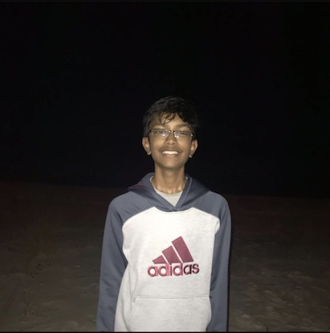
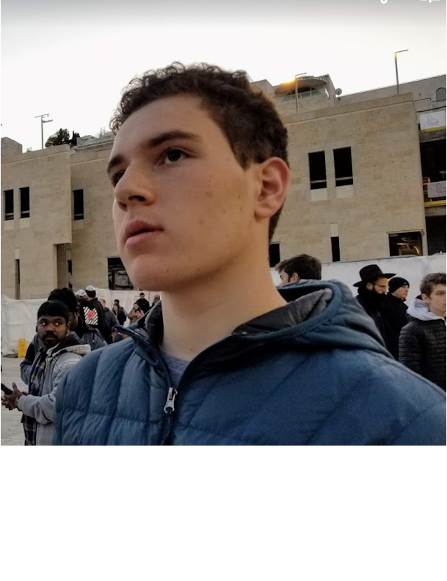
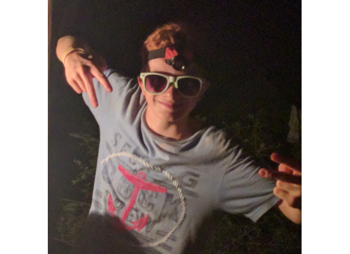
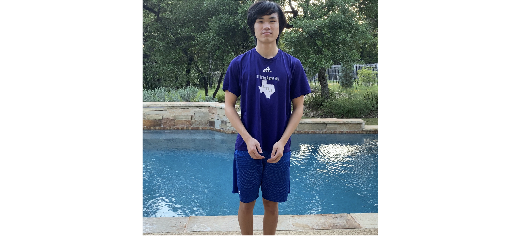

Hi! My name is Bhargav and I am a rising sophomore at the Liberal Arts and Science Academy in Austin, Texas. I was originally born in Philadelphia, Pennsylvania in 2005. Some of my hobbies include programming, playing
basketball, camping, and running. I decided to research about the future of artificial intelligence because of what the future holds in store for us from self-driving cars to insights into the stock market. My life goal is to be
on the spaceship that goes to Mars in the next few decades.

Hey y’all, my name is Joey Ross, and I am currently a freshman at LASA. Austin has been my home for nearly 16 years with my parents and one older brother. I have an affinity for computers, video games, and writing
programs, and, naturally, I was drawn to the idea of writing a magazine about technology. When I’m not on my computer experimenting with all kinds of programs, I’m usually playing basketball or doing something crazy with my friends.
NextGen is an important project to me, as I love to explore the idea of new technologies and future innovations. However, technology has not been readily available for every person in the world, and unfortunately, people overlook
the need for accessible technology. My goal is to shed some light on that issue and promote groups who aim to solve that project. Through participating in the EZine course, I have learned more about the modern age of technology,
and I have also learned about how to convey information in the form of an article.

Hello, I'm Sean Clarke, a rising sophomore at LASA High School in Austin, TX. I love anything technology, whether it be the internet, video games, coding, or anything of that nature; there's something so cool about
how much technology can do-- and does-- in our daily lives. I was born here in Austin and have lived here my whole life, and I even loved technology as a child, when I had a basic understanding of how electronic circuits worked.
Today, most of my spare-time projects are focused on designing software, so I decided that the interfaces route would be the best one to take for this magazine. I feel like the user experience is an underrated aspect of software
design, and so I wanted to draw some attention to how much effort and thinking goes into making interfaces blend in so you don't notice them as much. My long-term dream is to be the owner of a tech company.

Greetings, my name is Zach, and I am a 9th grader at the Liberal Arts and Science Academy high school in Austin, Texas. I have lived my entire life in Austin with my parents and my younger brother however I travel
outside of the USA quite often. During my time in this city, I have picked up a couple of hobbies and specialties. I have taken a liking to sports, everything from soccer to track; video games; television; and math. I have also
taken a liking to technology which greatly encouraged me to work on this tech magazine. I picked my topic of IoT for my article in this magazine because IoT is a big thing that is coming to our lives, and something I believe will
be integrated into everything around us. Unfortunately not a lot of people understand it, so I wrote this article to inform them all about this new and wonderful thing. Along with the arrival of IoT, I hope that in the future I
am able achieve the dream of being a successful business owner and be able to help the world in as many ways as possible.